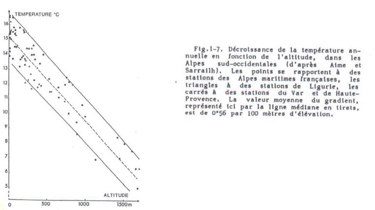

II) Influence de la température
A) Généralités
Température = élément majeur (avec humidité) des macro-climats terrestres
-
hemisphère Sud : isothermes annuels ~ parallèles à l'équateur en raison des masses maritimes
-
hémisphère Nord : isothermes plus irréguliers masses continentales plus importantes
Température moyennes annuelles les plus fortes: >30°C en Afrique (contient le plus chaud)
Régions intertropicales = températures élevées mais les variations journalières sont supérieur aux variations annuelles (pluies abondantes)
Régions extratropicales = régime thermique bien marqué
- Nord : chaud en juillet/août, froid en janvier
- Sud : inverse (pluies moins importantes sauf massifs montagneux)
Intervalle thermique dans lequel la vie est possible :
- 200°C et + 100°C
Certaines formes de durée de vie supportent des - 180°C :
- Spores de cryptogames
- Kystes de nématodes
Survie rendue possible par leur faible teneur en eau = anhydrobiose
Ex: Strain 121
Organisme unicellulaire appartenant aux Archées découverte en 2003, capable de survivre et de se reproduire à des températures extrêmes.
Localisation : évents hydrothermaux sous marins
Conditions :
- obscurité totale
- eau bouillonnante (réchauffée par le magma) 121°C
- eau reste liquide en raison des fortes pressions 240 bars
- respire des oxydes de fer pour transformer sa nourriture, rejette de la magnétite
Particularité : Si la température est inférieure à 80°C, Strain 121 entre en dormance, elle survit après 2h passées à 130°C
B) Propriétés thermiques
Grandes différences entre les milieux naturels à température égales, car cela dépend des conditions physiques des milieux.
Propriétés caractérisées par :
- capacité calorique : quantité en énergie nécessaire pour élever de 1°C un volume de 1cm3 d'un corps
eau >> humus >> silice > air
-
diffusion thermique : inversement proportionnelle à la capacité calorique, elle dépend de la conductivité du corps considéré et varie avec:
-
humidité
- porosité
- composition des matériaux
Le régime thermique du sol est très important en écologie
-
influence des microorganismes, de la pédofaune...
- croissance
- reproduction
- activité physiologique
-
dépend:
- du bilan énergétique du système sol - atmosphère
- couvert végétal
- des caractéristiques propres du sol :
- réflectance de la surface
- constituants solides
- prosité
- humidité
C) Température du sol et ses variations
Variations journalières

-
Les variations de températures diminuent rapidement avec la profondeur des sols
-
Au delà de 50 cm de profondeur, on a une absence de variation
Variations saisonnières
- Concerne des épaisseurs de sol beaucoup plus importantes
Ex : sols en zones boréales pouvant atteindre 1m de profondeur (permafrost)
D) Température de l'air

Diminution de la température avec l’augmentation de l'altitude: 100m de dénivelé équivaut à une diminution de ~ 0,56°C
Les variations journalières au contact des surfaces (sol, végétation...) provoque la création des variations verticales de température :
- élévation de haut en bas le jour
- élévation de bas en haut la nuit
Influence par le couvert végétal
- le flux de chaleur dépend :
- surface foliaire
- ventilation intervenant dans le couvert de végétation
La végétation rase ouverte : température max atteinte à la surface du sol
La végétation dense : température max au sommet de la végétation
E) Température et milieux aquatiques
La température dépend :
- échanges thermiques et radiatifs avec atmosphère
- déplacement des masses d'eau qui se font
- sous l'action de l'eau
- densité de l'eau (salinité)
Ex: Lac profond en zones tempérées ou froides
- stratification thermique
- variable avec les saisons
- différente selon les conditions du climat
Stratification thermique schématique d’un lac profond en zone tempérée hiver vs été
{kind=link}
Mouvement de l'eau et stratification thermique
{kind=link}
Ce sont des lacs dimictiques par opposition aux lac monomictiques qui présentent une stratification constante.
Sous les tropiques : lacs holomictiques = pas de stratification car pas de saison froide
D'autres facteurs influent sur le fonctionnement d'un lac:
- vent
- courants
Rôle des océans
- 70% de la surface de la Terre (rôle capital sur la répartition des climats)
- absorbent environ 80% du rayonnement solaire (évaporation importante au niveau de leur surface)
F) Action de la température sur les végétaux
Influence de tous les processus biologiques et métaboliques :
- croissance
- photosynthèse, respiration
- reproduction, survie..
-> repartition des espèces
Action de la température sur la croissance = résultante de son action sur :
- photosynthèse
- activation enzymatique respiratoire
Action sur fixation du CO2
- fixation maximale pour les espèces tempérées : entre 20 à 30°C
- fixation maximale pour les espèces montagnardes et subarctiques : entre 10 à -13°C
- fixation maximale pour les espèces des climats chauds: autour de 40°C (plantes en C4)
1) Importance des températures extrêmes
Les températures froides
-
nécessité de s'adapter pour résister aux températures basses
- ex : vie ralentie sous forme de :
- graines,
- spores,
- tubercules,
- bulbes
- ex : vie ralentie sous forme de :
-
organismes végétaux aux cytoplasmes riches en eau vont être tués par le gel
Remarques :
- différence entre température minimale de survie et température minimale de croissance
- température létale = température à laquelle la moitié des individus est tuée
Quelques exemples de température minimale de survie :
- Algues marines tropicales = entre + 5 et + 15°C
- Algues des mers froides = - 10 à - 40°C
- Plantes vasculaires tropicales = +5 à - 2°C
- Plantes vasculaires tempérées = - 10°C à - 20°C
- Plantes vasculaires zones boréales = au dessous de – 20°C
- Certains lichens en état de déshydratation peuvent résister à - 80°C
Les températures chaudes
Altérations irréversibles = thermodénaturation
Remarques :
Température maximale d'activité : variables selon les espèces
- une dizaine de °C : algues unicellulaires des névés
- 70°C : cynaophycées (eaux thermales)
- 80°C : bactéries thermophiles
- 45°C : plantes vasculaires tuées très rapidement
- 55°C : survie des Cactées et quelques espèces méditerranéennnes à feuilles persistantes